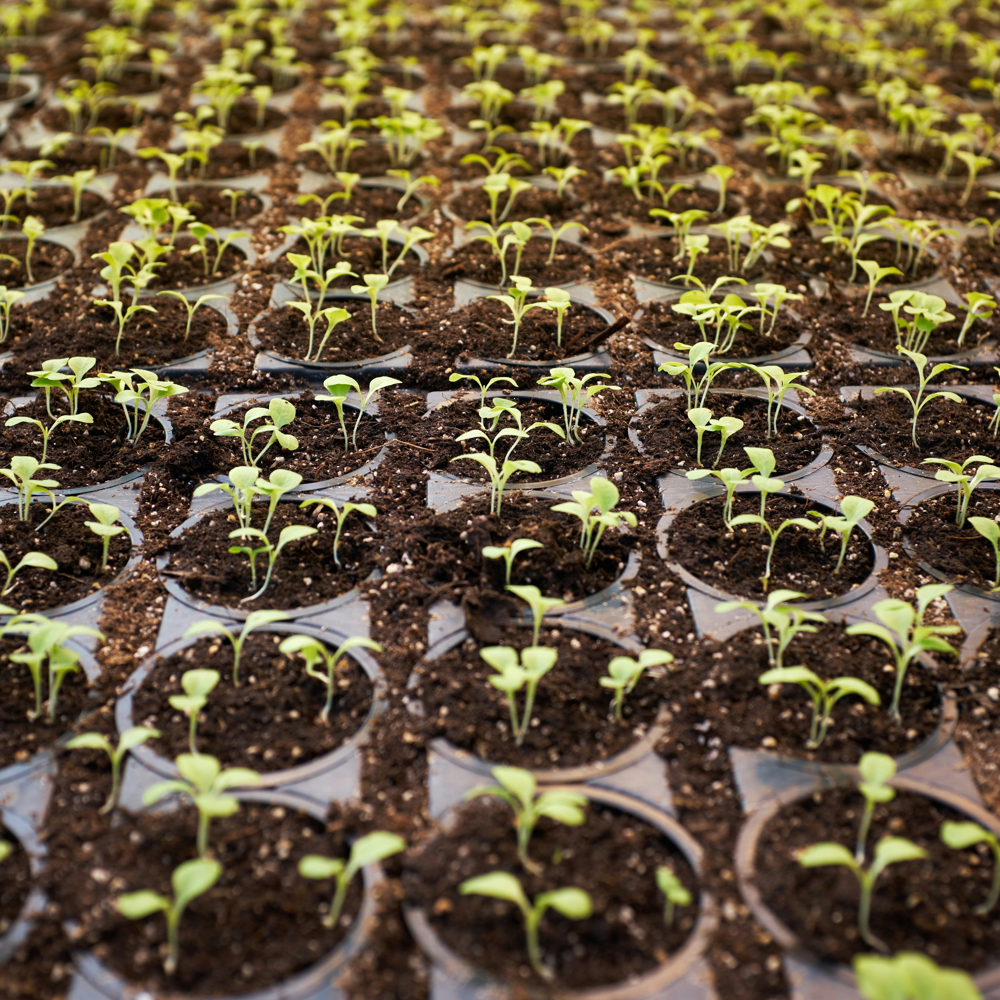

<div class="container" style="position: relative; top: 10%">
  <div class="row mt-lg-3">
    <div class="col-9">
      <h1>Join the AgriJSON Community</h1>

      <p>
        AgriJSON is at an initial stage of development. The content developed so
        far needs to be validated by AgriTech experts. The scope of coverage has
        to be expanded to accommodate all the popular use cases of digital
        agriculture, with a special focus on those that deploy emerging
        technologies like AI and IoT. The vision of AgriJSON can be accomplished
        only with the active participation and contribution of the community,
        which includes academia, IT professionals, AgriTech companies and
        governments. Persons or organizations interested in joining the AgriJSON
        community may contact
        <a href="mailto:jesa@weforum.org">Mr. Satynarayana</a> or
        <a href="mailto:info@iudx.org.in">ADeX hub</a>
      </p>
    </div>
    <div class="col-3">
      
    </div>
  </div>
</div>
